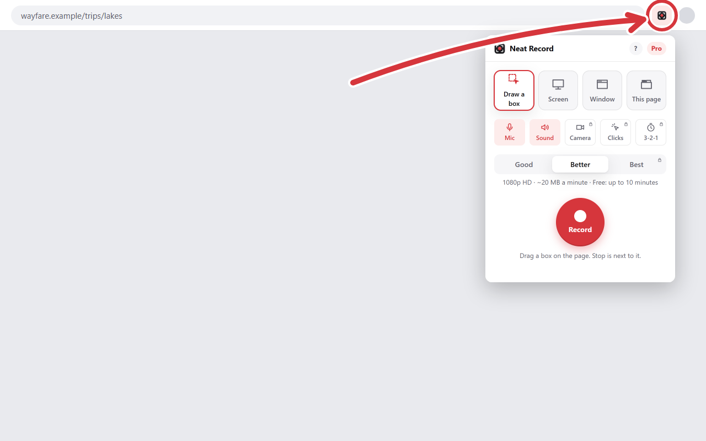
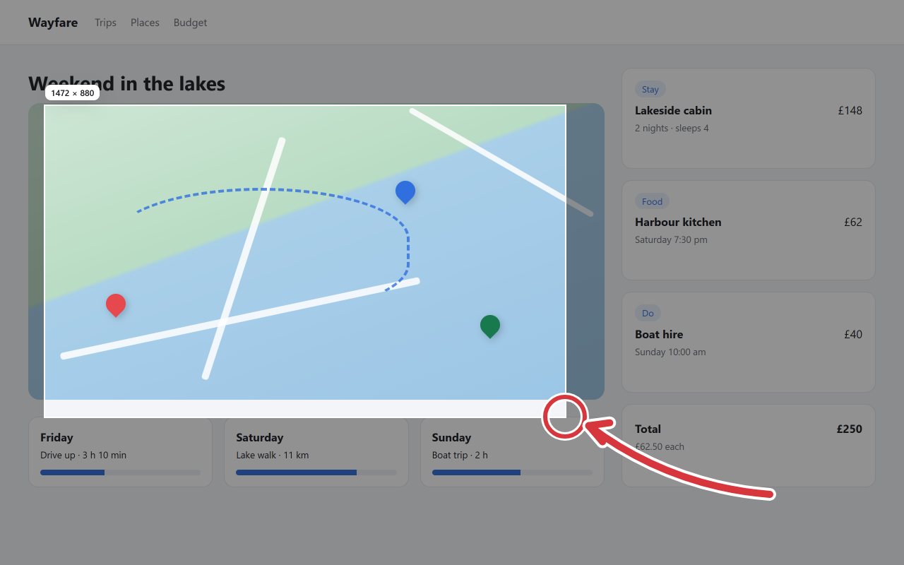
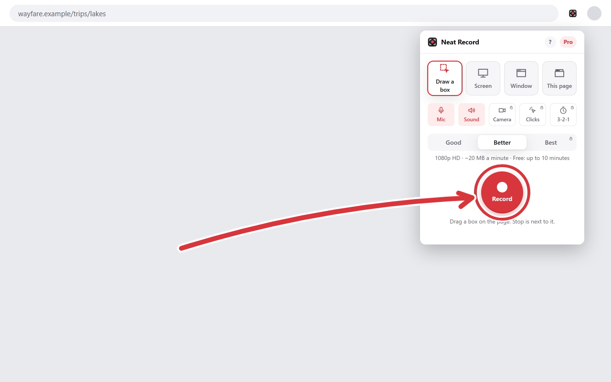
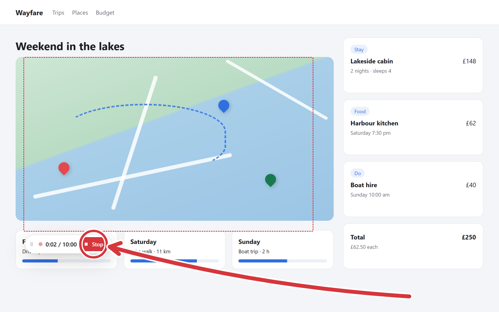
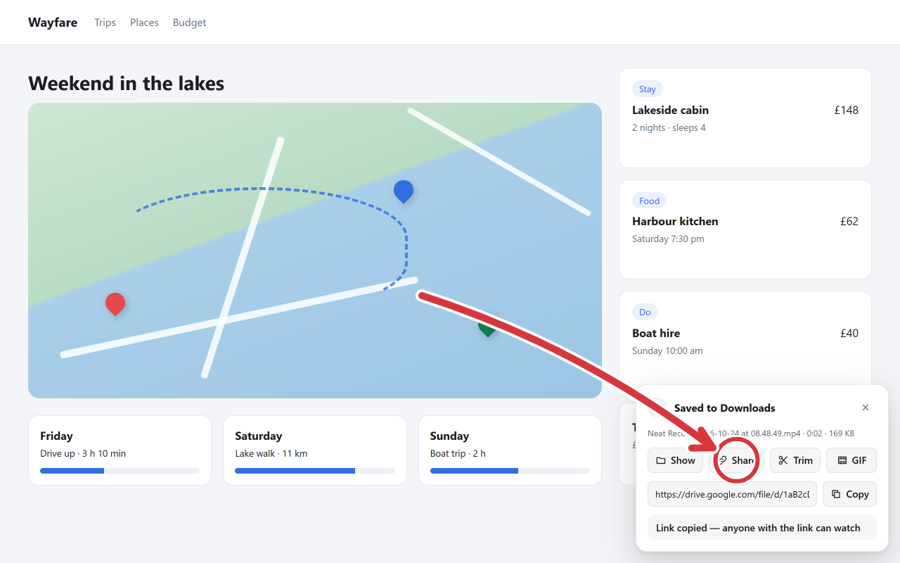
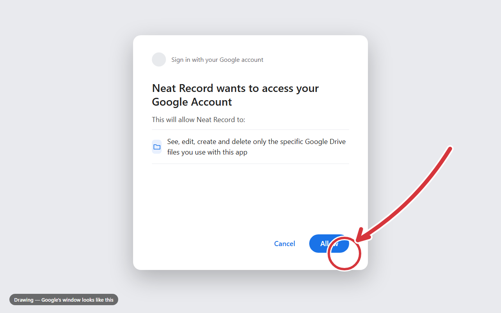
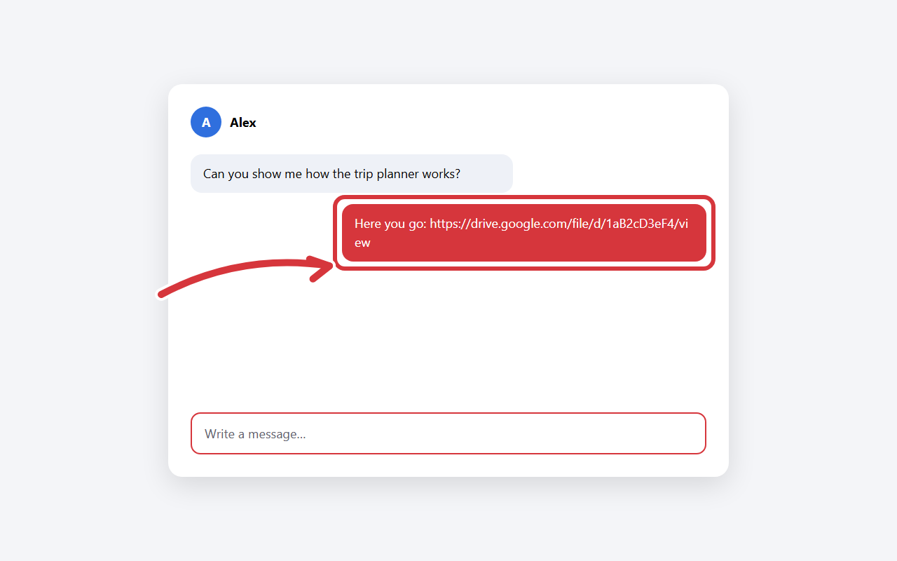

How to record your screen
Four steps. Then three more if you want to share it.
Four ways to record
Sound is off in Window mode — Chrome can't record one window's sound. Use Screen or This page for sound.
Click the Neat Record icon
It's at the top right of Chrome. If you can't see it, click the puzzle piece and pin Neat Record.

Pick “Draw a box”, then drag
Press and hold on the page, move to make a box around what you want, then let go. Changed your mind? Press Esc.

Press Record
The big red button. Recording starts at once — no account, nothing to sign up for.

Press Stop — your video is in Downloads
The little bar next to your box shows the time. Press Stop: the video is saved in your Downloads folder straight away. Recording the Screen, a Window or This page? Then there's no bar (it would end up in your video): click the Neat Record icon and press Stop, or Chrome's own Stop sharing button.

Share it (Pro)
Press Share
On the “Saved” card. Your video goes to your own Google Drive and you get a link.

Click Allow — only the first time
Google asks once if Neat Record may put files in your Drive. It can only see the files it makes, nothing else. Anyone you give the link to can watch the video.

Paste the link anywhere
The link is already copied. Paste it in an email, a chat or a document (Ctrl+V, or ⌘V on a Mac). Anyone with the link can watch.

Good, Better or Best?
Pick one under the switches before you press Record.
720p · ~10 MB a minute
1080p HD · ~20 MB a minute
1440p / 4K · ~40 MB a minute
Free recordings can be up to 10 minutes long. At 10:00 the recording stops by itself and is saved — nothing is lost. Pro has no limit.
If something doesn't work
- “This page can't be recorded” — Chrome doesn't let anyone record its own pages, like Chrome's start page. Open a normal website, or pick Screen or Window.
- No sound in Window mode — Chrome can't record one window's sound. Use Screen or This page for sound.
- The camera circle says “Camera blocked” — some websites don't allow cameras. Turn Camera off for that site, or allow the camera in the address bar.
- Chrome asked where to save, and you closed that window — press Save again.